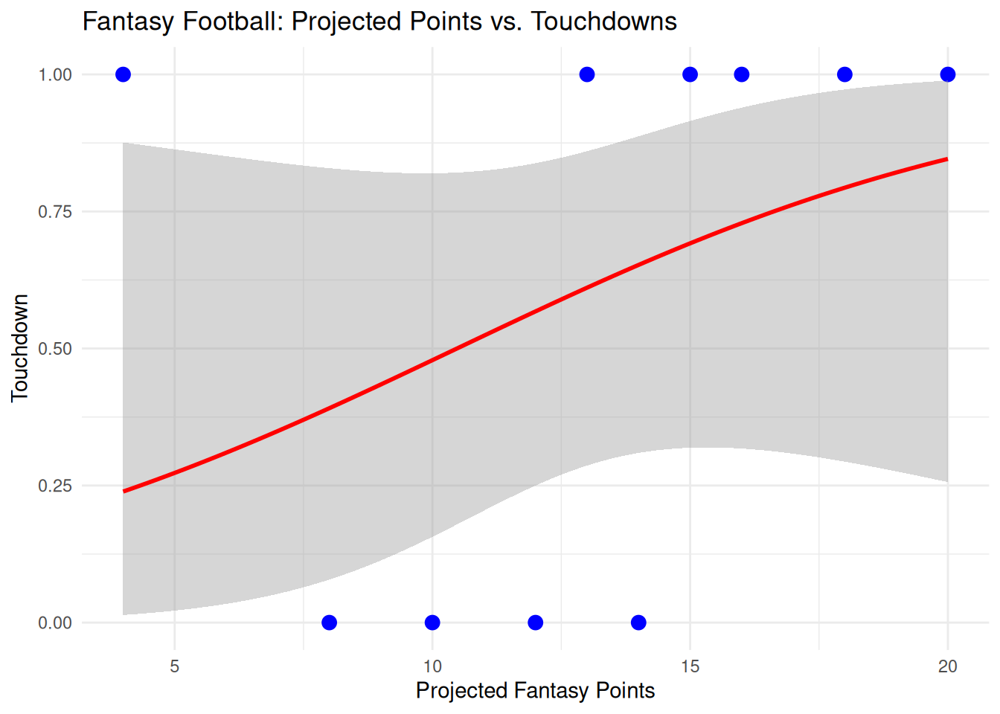

Many fantasy managers often rely on the set projections to decide to start or sit a player. How accurate are these predictions? I used a simulation of NFL data to see if a model could predict whether or not a player can score or not. The results of this finding can indicate if players with higher projections lead to scores, and can help us become aware of our own biases and look deeper than projections put out by our fantasy services.
2 Background
Setting a weekly lineup can take zero hesitation or it can be incredibly important. However, it all comes down to whether or not the player performs. The forecasts of each player are often labeled under their projected stat line of that certain game; all based on score probability, yardage probability, or catch probability. By comparing these predictions to actual results, interpreting projections and avoiding biases in certain players can help you set a better lineup!
2.1 Hypothesis and prediction
The Question is: How accurately can fantasy football projections predict whether a player scores in a certain week or not.
My hypothesis is that players with a higher projection will score at a higher rate than those who do not, but not in every circumstance.
# Simple scatterplotggplot(fantasy, aes(x = projected_points, y = touchdown)) +geom_point(color ="blue", size =3) +geom_smooth(method ="glm", method.args =list(family ="binomial"), color ="red") +labs(title ="Fantasy Football: Projected Points vs. Touchdowns",x ="Projected Fantasy Points",y ="Touchdown" ) +theme_minimal()
`geom_smooth()` using formula = 'y ~ x'

4 Results
In this experiment, I created 10 random players with random point projections, and either a 1 or a 0 if they score a touchdown or not.The scatter plot shows that on average, players with a higher point projection will score more. Although there are some outliers of course, the higher point projection will often lead to more touchdowns. This can really highlight the fact that fantasy is very unpredictable.
5 Discussion
I believe that my hypothesis was supported; higher projected points can predict higher odds of scoring. Although touchdowns are unpredictable, the accuracy is of course limited. This can support the fact that projections are more of a guide, not a certainty.
5.1 Strengths and Limitations
Some strengths about this study was that the hypothesis was indeed supported.Some negatives include that this data was purely simulated and didn’t use real players. ## Conclusion {#sec-conclusion}
In conclusion, higher projections certainly point to higher odds of scoring touchdowns. In reality, fantasy projections, no matter who they came from, are never ever perfect. It is better to use these projections as more of a guide, and not completely certain of happening. It is better to do your own research and decide who has the best chances of creating the most upside that week.